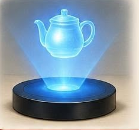

Gábor Dénes magyar származású fizikus és mérnök. 1947-ben dolgozta ki a holográfia elvét, amellyel háromdimenziós képeket lehet rögzíteni és megjeleníteni. Eredetileg az elektronmikroszkópok képminőségén akart javítani.
A módszer igazán akkor vált használhatóvá, amikor megjelent a lézer. Gábor Dénes 1971-ben megkapta ezért a fizikai Nobel-díjat. Ma a hologramokat például bankjegyeken és bankkártyákon is láthatjuk.
← Vissza a főoldalra